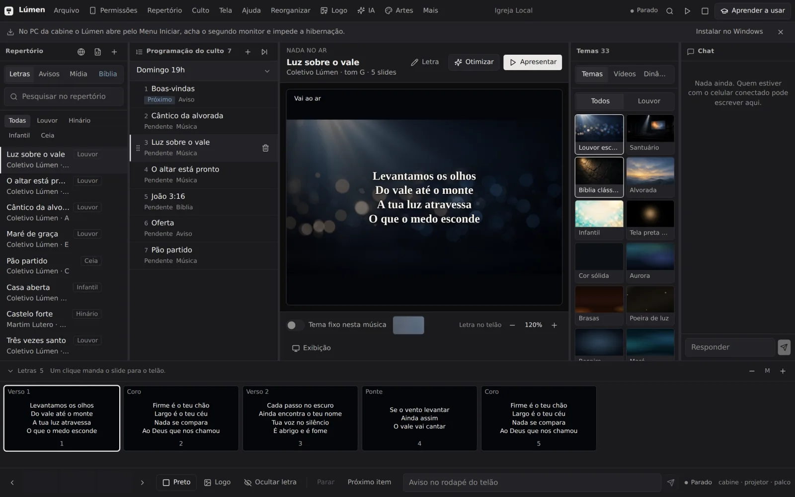
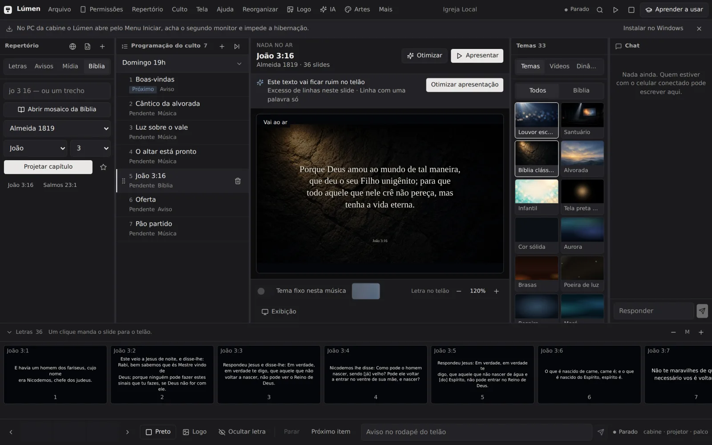

ProjetosIgrejas
Lúmen
Projeção de culto que não trava na frente da igreja.
Letra, Bíblia, avisos e mídia no telão, operados por um voluntário — sem internet e sem montar slide no PowerPoint a cada domingo.
Contado no repositório público em 24 set 2026.
Direto do app
Telas reais


Capturas do app rodando com dados de exemplo, em 25 set 2026. Clique para ampliar.
Prova de entrega
O que já funciona hoje
Já entregue
- Instalador para Windows que não pede senha de administrador
- Letras do Letras e do Vagalume, quebradas em slides sozinhas
- Bíblia inteira offline: Almeida 1819 e Bíblia Livre
- Celular como controle remoto, pareado lendo um QR code
- Pastor pede o versículo pelo celular; a cabine decide a hora
- Auto-Slide por voz, com o áudio processado no próprio PC
- Atualização automática: o app avisa quando sai versão nova
- Editor de artes e efeitos ao vivo para montar o telão
Como chegou até aqui
Primeira versão: a cabine de projeção.
Telão, instalador para Windows e biblioteca de mídia.
Atualização automática: cada mudança aprovada vira uma versão publicada.
O celular vira controle remoto, pareado por QR code.
Editor de artes, efeitos ao vivo e assistente local.
No culto
Como o voluntário usa, do começo ao fim
PreparaBusca as letras e monta a programação do culto.
ConfereO check-up pré-culto testa telão, som e mídia.
ProjetaF5 põe no ar, e as setas passam os slides.
AcompanhaOs músicos veem cifra e o próximo slide no palco.
ResolveF9 põe um versículo de socorro no ar; se o app fechar, ele volta ao ponto exato.
Por que o Lúmen
Feito para a cabine de igreja
Funciona sem internet
Bíblia, temas e letras salvas ficam no PC. A queda da rede não para o culto.
Pensado para o escuro
O que está no ar é sempre o mais claro da tela, e os controles nunca mudam de lugar.
Roda em PC modesto
Os temas animados são desenhados em código, não em vídeo: instalador leve e pouco uso de processador.
Em vez de montar slides no PowerPoint a cada culto: a letra é buscada e quebrada em slides sozinha, a Bíblia inteira já está no app e o operador controla tudo pelo teclado ou pelo celular.
Transparência
O que vem a seguir
- Para quem é
- Igrejas pequenas e médias que projetam o culto num notebook ou PC com Windows.
- Como instalar
- Baixe o .exe nas Releases do GitHub. Não precisa de Node.js nem de mais nada instalado antes.
- Tecnologia
- Electron, React 19, TypeScript, TanStack Start e PGLite (banco local).
Quer o Lúmen na cabine da sua igreja?
Me chama no LinkedIn e conversamos sobre como ele funciona no seu culto.